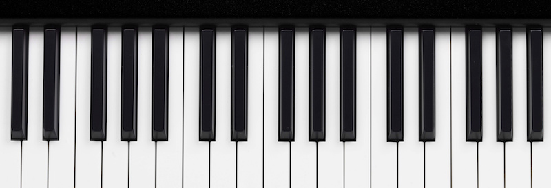

Witaj na mojej stronie!
Fortepian to jeden z najbardziej wszechstronnych instrumentów na świecie. Dzięki szerokiemu zakresowi dźwięków i bogatej dynamice może pełnić rolę zarówno instrumentu solowego, jak i akompaniującego. Na tej stronie znajdziesz informacje o jego budowie, historii oraz najsłynniejszych pianistach. Odkryj magię fortepianu — jego historię, tajemnice i piękno ukryte w czarno-białych klawiszach.
